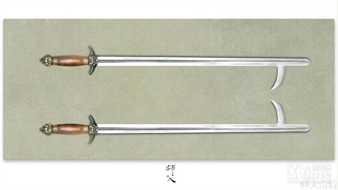
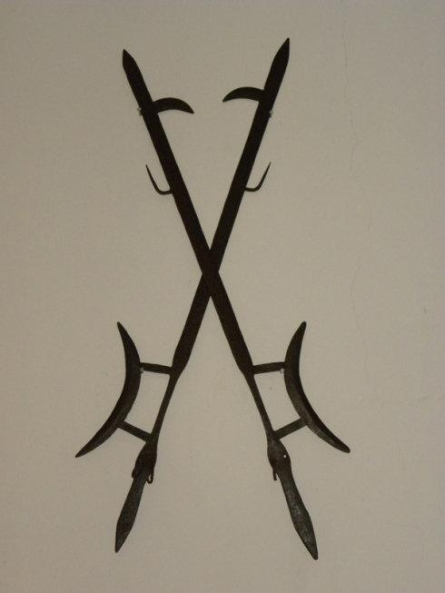
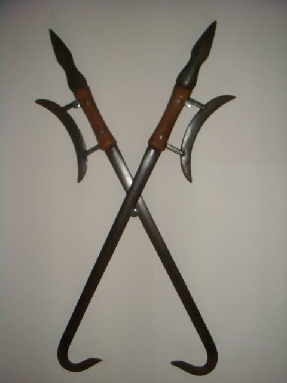
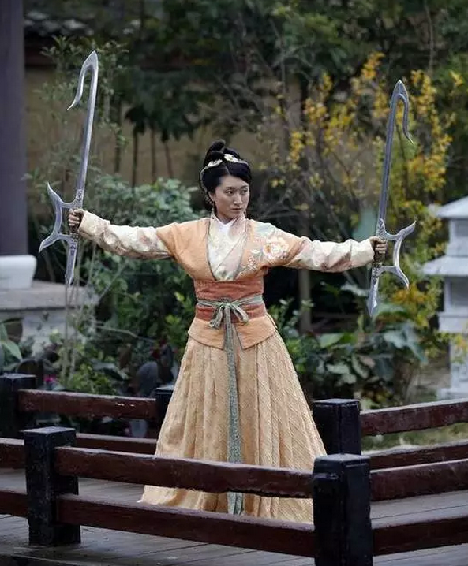
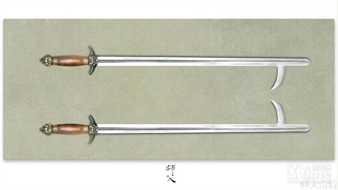
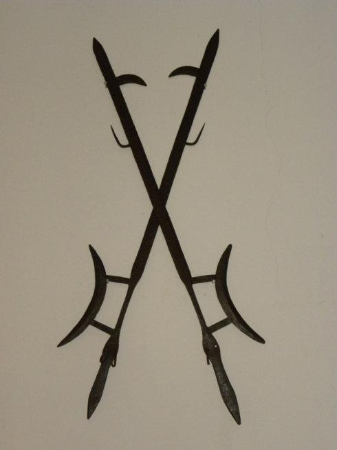
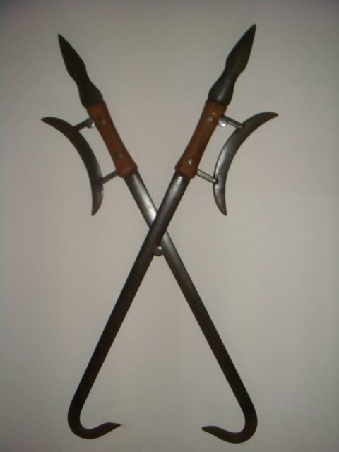
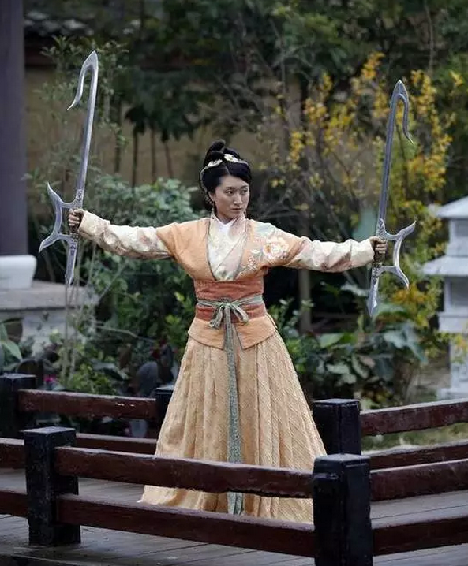

九： 双钩
《师父》中巷战兵器之一，双持系比较常见的代表，护手双钩也常见于各大影视剧中。比如《卧虎藏龙》中俞秀莲以兵器车轮战对决玉娇龙的青冥剑就出现过双钩。《师父》中的双钩有些特别，形似剑，没有护手刃，前端刃处有钩子，民间这种兵器俗称“钩镰子”。

双钩(Hook Swords)，系由戈演变而成的兵器。武术中所用的钩有单、双钩之分。 春秋时期，双钩与戈、戟并用之。技法有钩、缕、掏、带、托、压、挑、刨、挂、架等。演练时起伏吞吐如浪式



《师父》中巷战兵器之一，双持系比较常见的代表，护手双钩也常见于各大影视剧中。比如《卧虎藏龙》中俞秀莲以兵器车轮战对决玉娇龙的青冥剑就出现过双钩。《师父》中的双钩有些特别，形似剑，没有护手刃，前端刃处有钩子，民间这种兵器俗称“钩镰子”。

双钩(Hook Swords)，系由戈演变而成的兵器。武术中所用的钩有单、双钩之分。 春秋时期，双钩与戈、戟并用之。技法有钩、缕、掏、带、托、压、挑、刨、挂、架等。演练时起伏吞吐如浪式


